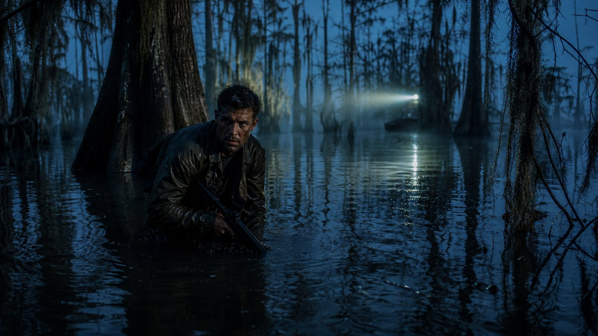
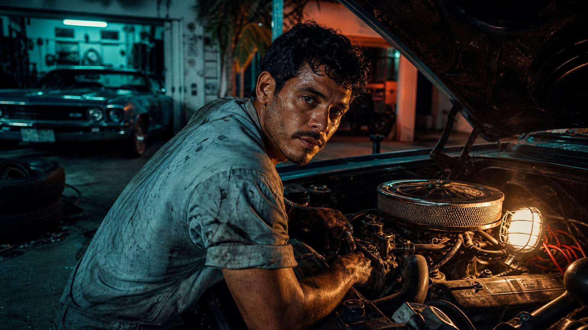

Rockstar a nommé neuf personnes autour de Jason et Lucia, réparties sur deux mondes : l'économie de la contrebande aux Keys et la machine à clout de Vice City. Fiches, liens et statut de chaque information.
OFFICIELPRESSE · 18/11ESTIMATIONPRESSE · 18/11
ILLUSTRATION IA · NON OFFICIEL
OFFICIEL
La distribution en un tableau
Huit fiches de personnages publiées par Rockstar couvrent neuf personnes nommées, parce que Real Dimez compte deux membres. Deux noms supplémentaires — Lori et Wyman — apparaissent dans les biographies et le descriptif de l'édition Ultimate.
Personnages secondaires nommés au 18/11/2026
Personnage
Rôle
Rattaché à
Statut
Brian Heder
Contrebandier maritime, chantier naval
Jason, Cal, Lori
OFFICIEL
Cal Hampton
Ami de Jason, veille radio Coast Guard
Brian, Jason
OFFICIEL
Boobie Ike
Immobilier, club, studio d'enregistrement
Dre'Quan, Real Dimez
OFFICIEL
Dre'Quan Priest
Patron de label, Only Raw Records
Boobie, Real Dimez
OFFICIEL
Bae-Luxe
Rappeuse, moitié de Real Dimez
Roxy, Dre'Quan
OFFICIEL
Roxy
Rappeuse, moitié de Real Dimez
Bae-Luxe, Dre'Quan
OFFICIEL
Raul Bautista
Braqueur de banques, recruteur
Son équipe, Jason et Lucia
OFFICIEL
Lori
Troisième épouse de Brian, associée
Brian
OFFICIEL
Wyman
« Fixer » et collecteur local
Édition Ultimate
PRESSE · 18/11
OFFICIEL
Le pôle Keys : Brian et Cal
C'est le monde d'où vient Jason : contrebande maritime, chantier naval, bières et scanners radio. Ces deux personnages ouvrent la campagne.
OFFICIEL
Brian Heder
Contrebandier « de la grande époque » : il écoule encore la marchandise via son chantier naval, avec sa troisième épouse Lori. Jason loge gratuitement chez lui et rembourse en intimidations. CAST-02
Voix : Stephen Root, confirmé à l'Associated Press. CAST-08
Il « envoie les autres faire le sale boulot ».
OFFICIEL
Cal Hampton
Ami de Jason et associé de Brian. Il reste chez lui, écoute les communications des Coast Guard avec quelques bières et des onglets privés ouverts — le personnage de soutien technique du duo. CHA-21
Réplique officielle : « There are way too many birds flying around in perfect formation. »
Comédien rapporté : Bobby Moynihan, non confirmé. PRESSE · 18/11
OFFICIEL
Le pôle Vice City : Boobie, Dre'Quan, Real Dimez
Trois destins accrochés à un seul pari : faire de Only Raw Records un label qui compte. C'est le fil narratif parallèle le plus développé du casting officiel.
OFFICIEL
Boobie Ike
Légende locale de Vice City : immobilier, club de strip-tease et studio. « Tout sourire jusqu'à ce qu'il faille parler affaires. » CAST-03
OFFICIEL
Dre'Quan Priest
« Plus hustler que gangster » : ancien dealer, patron de label, il signe Real Dimez pour décrocher enfin un tube et sortir du circuit des clubs de Boobie. CAST-04
OFFICIEL
Real Dimez
Bae-Luxe et Roxy, amies de lycée, ont transformé des rackets de dealers en titres et en présence sociale. Un tube avec DWNPLY, cinq ans de vaches maigres, puis Only Raw Records. CAST-05

Illustration originale (non officielle) : le club de Boobie, l'un des trois piliers de son empire avec l'immobilier et le studio.
Pourquoi ce fil compte. Le label est le seul arc officiel qui ne parle ni de drogue ni de braquage : il porte la satire du clout et du business musical, et c'est probablement là que se jouent les missions de Boobie et de Dre'Quan. Aucun détail de mission n'a été officialisé. CAST-04
PRESSE · 18/11
Raul Bautista et les braquages
Le seul personnage secondaire dont le rôle de gameplay est directement documenté par la critique : son équipe de voleurs et de perceurs de coffres accompagne Jason et Lucia dans une série de braquages à forts enjeux.
CAST-06Braqueur chevronné, charme et culot, il recrute des talents pour des coups de plus en plus risqués ; son équipe devra un jour « doubler la mise ou retirer ses jetons ».
CAST-12D'après la critique CBC du 18/11, les braquages à forts enjeux du jeu passent par son équipe — c'est le fil « heist » du récit.
CHA-24Sa capacité à recruter est officielle ; en revanche la liste exacte de ses membres et l'ordre des braquages ne sont pas publiés. EN ATTENTE · 19/11

Illustration originale (non officielle) : le garage, antichambre des braquages.
Lori, Wyman et les noms cités
Trois noms circulent sans fiche complète. Les traiter à part évite de leur inventer une biographie.
CAST-02Lori : troisième épouse de Brian et associée de la contrebande. Aucune fiche dédiée, aucun rôle de mission confirmé.
CAST-07Wyman : nommé dans le descriptif de l'édition Ultimate comme « fixer » et collecteur local, sans visuel ni fiche. PRESSE · 18/11
CAST-05DWNPLY : rappeur cité dans la biographie de Real Dimez pour le premier tube du duo. Pas de fiche officielle.
CAST-11Méndez : nommé dans le matériel de l'Extended Look ; rôle précis non communiqué. PRESSE · 18/11
Règle du guide. Aucun de ces quatre noms ne reçoit de biographie inventée : ils sont cités avec leur source et leur statut, et rien de plus.
ESTIMATION
Qui est le méchant ? Ce qu'on ne sait pas
Aucun antagoniste principal n'a été officialisé au 18 novembre 2026. C'est un fait vérifiable, et c'est aussi la principale source de théories communautaires.
Les hypothèses qui circulent
Boobie Ike en traître de fin de parcours, à la manière d'un Dimitri. PRESSE · 18/11
Brian Heder comme fil reliant le duo à Raul. PRESSE · 18/11
Raul en retournement « trop évident pour être vrai ». PRESSE · 18/11
Ce que Rockstar dit vraiment
Le synopsis officiel parle d'un « complot criminel qui traverse tout l'État de Leonida », sans nommer de commanditaire.
Aucune fiche de personnage ne porte l'étiquette d'antagoniste.
Conclusion : aucune de ces trois théories ne peut être présentée comme un fait. CAST-13
Rumeurs non vérifiées
Un détective corrompu présenté comme antagoniste : théorie issue des trailers, aucune source primaire.
Une trahison de Boobie Ike validée par des répliques du trailer : interprétation, pas une confirmation.
Un rôle d'antagoniste final pour Raul : pure spéculation de forum.
Statut : ESTIMATIONCAST-13. Les crédits et le jeu du 19/11 trancheront.